Ch9-11. String 생성자
0. 목차
Chapter9. java.lang 패키지와 유용한 클래스
Ch9 - 11. String 클래스의 생성자와 메서드
Ch9 - 11. String 클래스의 생성자와 메서드
▶ String(String s)
▷ 주어진 문자열(s)을 갖는 String 인스턴스를 생성
▷ 사용 잘 하지 않음
String s = new String("Hello");
// console
Hello
▶ Stirng(char[] value)
▷ 주어진 문자열(value)을 갖는 String 인스턴스를 생성
▷ char[] → String
char[] c = {'H', 'e', 'l', 'l', 'o' };
String s = new String(c);
// console
Hello
char[] ← String은 어떻게?
tocharArray()사용
▶ String(StringBuffer sb)
▷ StringBuffer 인스턴스가 갖고있는 문자열과 같은 내용의 String 인스턴스 생성
▷ StringBuffer → String
StringBuffer sb = new StringBuffer("Hello");
String s = new String(sb);
// console
Hello
▶ char charAt(int index)
▷ 지정된 위치(index)에 있는 문자를 알려 줌
▷ index는 0부터 시작
String s = "Hello";
String n = "0123456";
char c1 = s.charAt(1);
char c2 = n.charAt(1);
// console
e // c1
1 // c2
▶ int compareTo(String str)
▷ 문자열(str)과 사전순(Dictionary Order)으로 비교
▷ 정렬
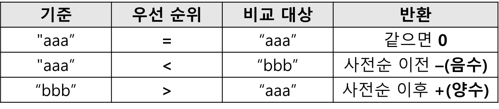
int i1 = "aaa".compareTo("aaa");
int i2 = "aaa".compareTo("bbb");
int i3 = "bbb".compareTo("aaa");
// console
0 // i1
-1 // i2
1 // i3
▶ String concat(String str)
▷ 문자열(str)을 뒤에 덧붙임
String s1 = "Hello";
String s2 = s1.concat("World");
// console
HelloWorld // s2
▶ boolean contains(CharSequence s)
▷ 지정된 문자열(s)이 포함되었는지 검사
String s1 = "abcde";
boolean s2 = s1.contains("ab");
// console
true // s2
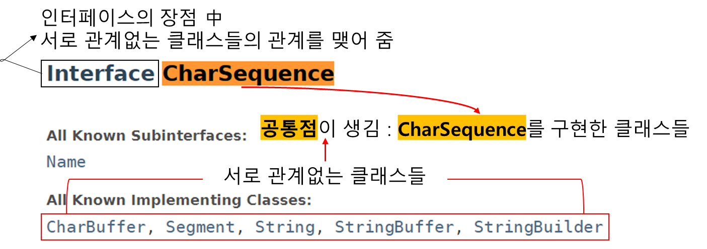
CharSequence를 구현한 클래스를 매개변수로 받으면 됨
▶ boolean endSwith(String txt)
▷ 지정된 문자열(txt)로 끝나는지 검사
▷ endSwith ↔ startSwith
String file = "Hello txt";
boolean b = file.endsWith("txt");
// console
true // b
▶ boolean equals(Object obj)
▷ 매개변수로 받은 문자열(obj)과 String 인스턴스의 문자열 비교
▷ obj가 String이 아니거나 문자열이 다르면 false
String s = "Hello";
boolean b1 = s.equals("Hello");
boolean b2 = s.equals("hello");
// console
true // b1
false // b2
▶ boolean equalsIgnoreCase(String str)
▷ 문자열과 String 인스턴스의 문자열을 대소문자 구분없이 비교
String s = "Hello";
boolean b1 = s.equalsIgnoreCase("Hello");
boolean b2 = s.equalsIgnoreCase("hello");
// console
true // b1
true // b2
▶ int indexOf(int ch)
▷ 주어진 문자(ch)가 문자열에 존재하는지 확인하여
▷ 위치(index)를 알려줌
▷ index에 없으면 -1을 반환
▷ index는 0부터 시작
String s = "Hello";
int idx1 = s.indexOf('o');
int idx2 = s.indexOf('k');
// console
4 // idx1
-1 // idx2
▶ int indexOf(int ch, int pos)
▷ 주어진 문자(ch)가 문자열에 존재하는 지
▷ 지정 된 위치(pos)부터 확인하여
▷ 위치(index)를 알려줌
▷ 못 찾으면 -1 반환
▷ index는 0부터 시작
String s = "Hello";
int idx1 = s.indexOf('e', 0);
int idx2 = s.indexOf('e', 2);
// console
1 // idx1
-1 // idx2
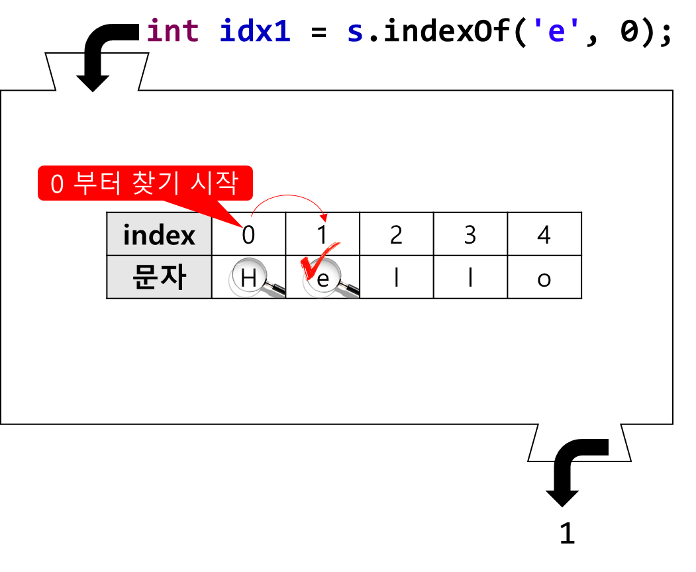
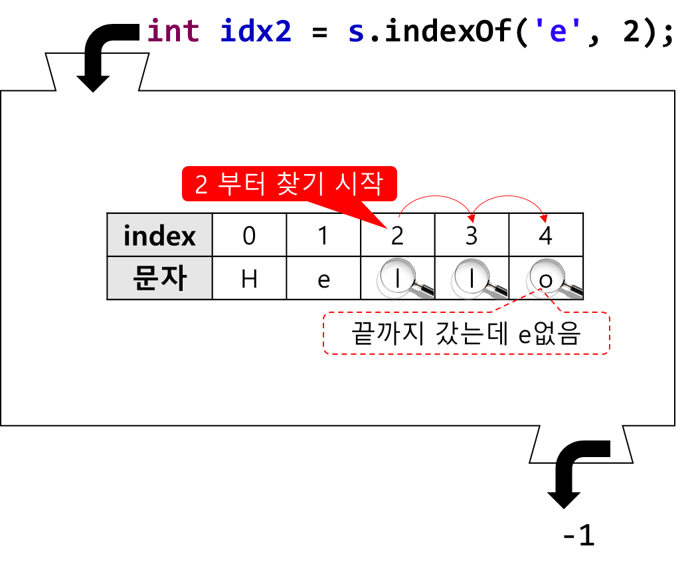
▶ int indexOf(String str)
▷ 주어진 문자열이 존재하는 위치(index)를 알려줌
▷ 주어진 문자열이 존재하지 않으면 -1을 반환
▷ index는 0부터 시작
String s = "ABCDEFG";
int idx = s.indexOf("CD");
// console
2
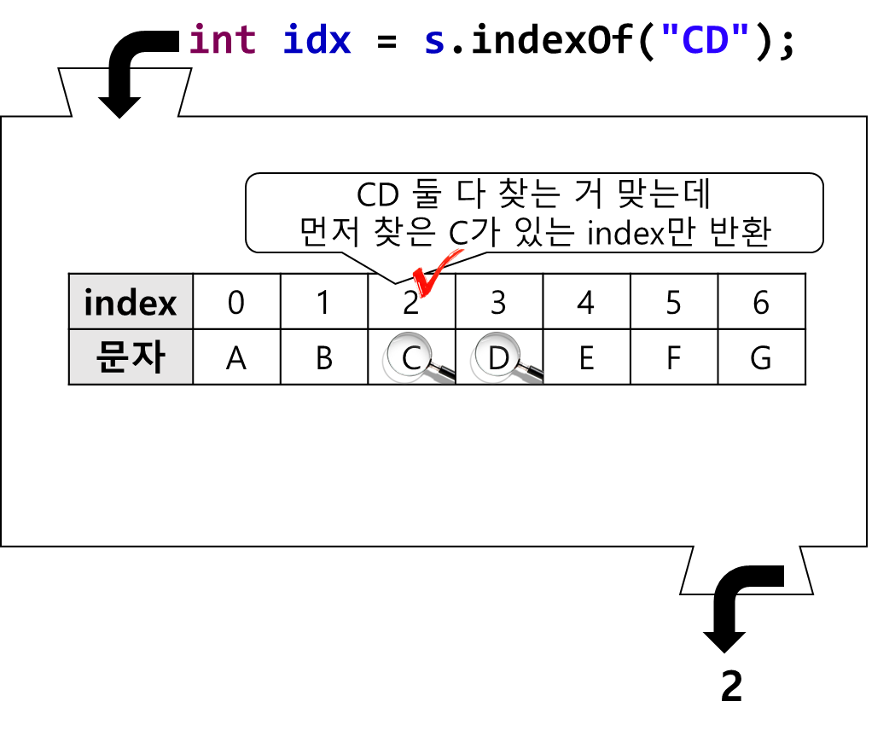
▶ int lastIndexOf(int ch)
▷ 지정된 문자 또는 문자 코드를 문자열의 오른쪽 끝에서부터 찾아
▷ 위치(index)를 알려줌
▷ 못 찾으면 -1을 반환
String s = "java.lang.Object";
int idx1 = s.lastIndexOf('.');
int idx2 = s.indexOf('.');
// console
9 // idx1 : lastIndexOf
4 // idx2 : indexOf
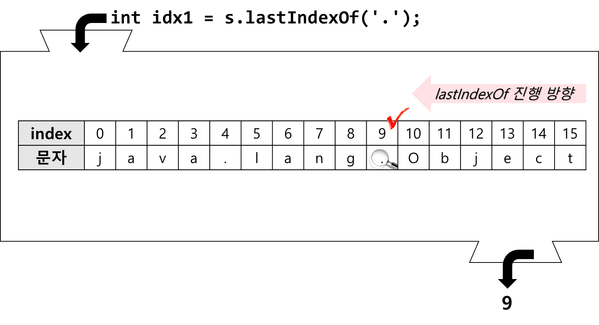
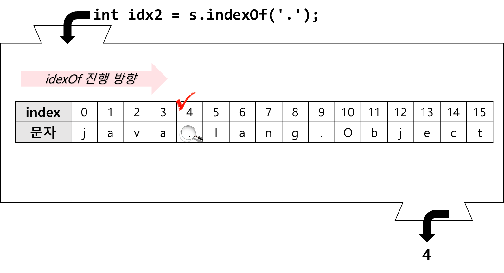
▶ int indexOf(String str)
▷ 지정된 문자열을 인스턴스의 문자열 오른쪽 끝에서 부터 찾아서
▷ 위치(index)를 알려줌
▷ 못 찾으면 -1을 반환
String s = "java.lang.java";
int idx1 = s.lastIndexOf("java");
int idx2 = s.indexOf("java");
// console
10 // idx1
0 // idx2
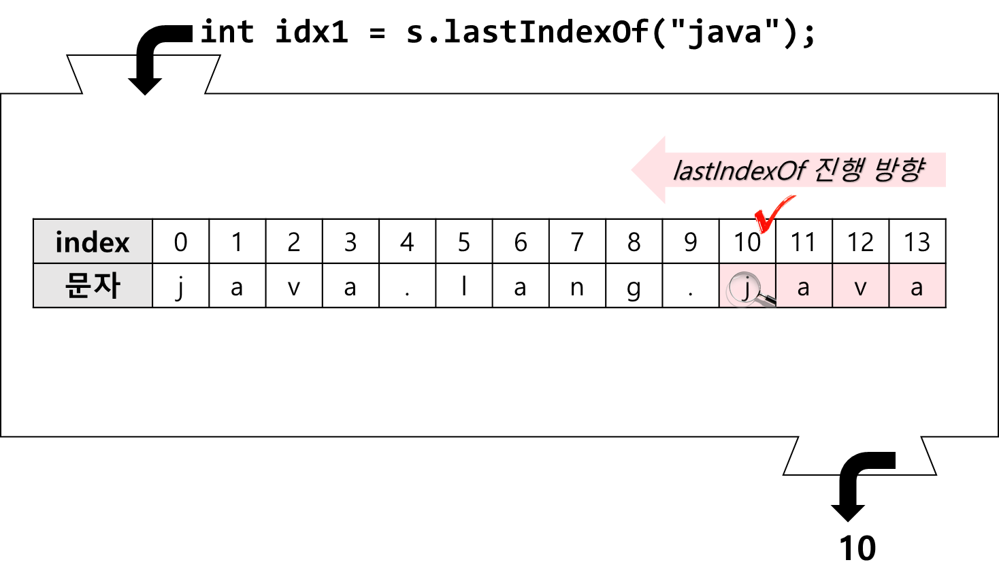
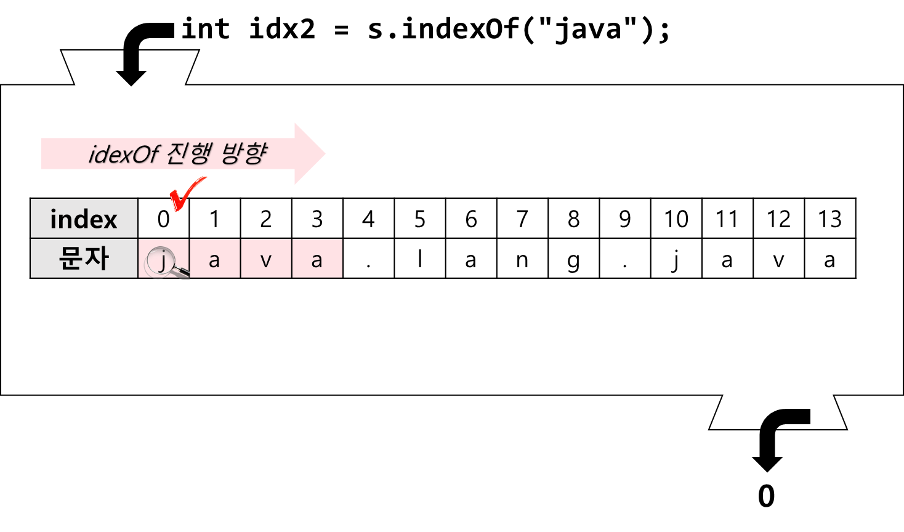
▶ int length()
▷ 문자열의 길이를 알려줌
String s = "Hello";
int length = s.length();
// console
5
▶ String[] split(String regex)
▷ regular Expresion
▷ 문자열을 지정 된 분리자(regex)로 나누어
▷ 문자열 배열에 담아 반환
String animals = "dog,cat,bear";
String[] arr = animals.split(",");
// console
dog // arr[0]
cat // arr[1]
bear // arr[2]
▶ String[] split(String regex, int limit)
▷ 문자열을 지정 된 분리자(regex)로 나누어
▷ 문자열 배열에 담아 반환
▷ 단, 문자열 전체를 지정된 수(limit)로 자름
String animals = "dog,cat,bear";
String[] arr = animals.split(",", 2); // 2부분으로만 나눈다는 뜻
// console
dog // arr[0]
cat,bear // arr[1]
▶ boolean startsWith(String prefix)
▷ 주어진 문자열(prifix)로 시작하는 지 검사
▷ startsWith ↔ endWith
String s = "java.lang.Object";
boolean b1 = s.startsWith("java");
boolean b2 = s.startsWith("lang");
// console
true // b1
false // b2
▶ String substring(int begin)
▶ String substring(int begin, int end)
▷ int end 생략 시, int begin에서 index의 끝까지 출력
▷ 주어진 시작 위치(begin)부터 끝 위치(end) 사이에 포함된 문자열을 얻음
▷ 이 때 시작 위치의 문자는 범위에 포함되지만,
▷ 끝 위치의 문자는 포함되지 않음
▷ begin ≤ 범위 < end
String s = "java.lang.Object";
String c = s.substring(10);
String p = s.substring(5, 9);
// console
Object // c
lang // p
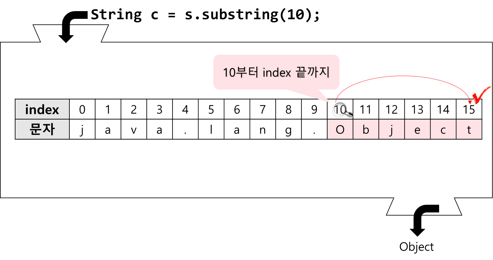
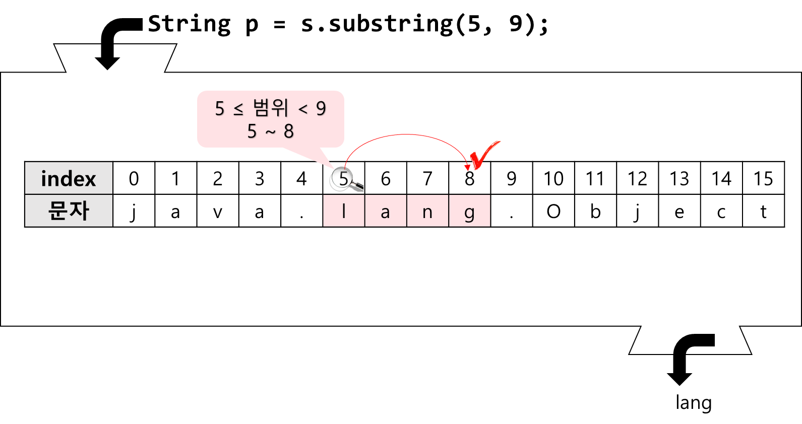
▶ String toLowerCase()
▷ String 인스턴스에 저장되어있는 모든 문자열을 소문자로 변환하여 반환
String s = "Hello";
String s1 = s.toLowerCase();
// console
hello
▶ String toUpperCase()
▷ String 인스턴스에 저장되어있는 모든 문자열을 대문자로 변환하여 반환
String s = "Hello";
String s1 = s.toUpperCase();
// console
HELLO
▶ String trim()
▷ 문자열의 양쪽 끝에 있는 공백을 없앤 결과를 반환
▷ 문자열의 중간에 있는 공백은 제거되지 않음
String s = " Hello World ";
String s1 = s.trim();
// console
Hello World
▶ static String valueOf(boolean b)
▶ static String valueOf(char ch)
▶ static String valueOf(int i)
▶ static String valueOf(long l)
▶ static String valueOf(float f)
▶ static String valueOf(double d)
▶ static String valueOf(Object o)
▷ 지정된 값을 String으로 변환하여 반환
▷ 참조변수의 경우, toString()을 호출한 결과를 반환
String booleanString = String.valueOf(true);
String charString = String.valueOf('a');
String intString = String.valueOf(100);
String longString = String.valueOf(100L);
String floatString = String.valueOf(10f);
String doubleString = String.valueOf(10.0);
java.util.Date dd = new java.util.Date();
String deteString = String.valueOf(dd);
// console
boolean → String : "true"
char → String : "a"
int → String : "100"
long → String : "100"
float → String : "10.0"
double → String : "10.0"
dete → String : "Wed Jul 21 23:24:51 KST 2021"